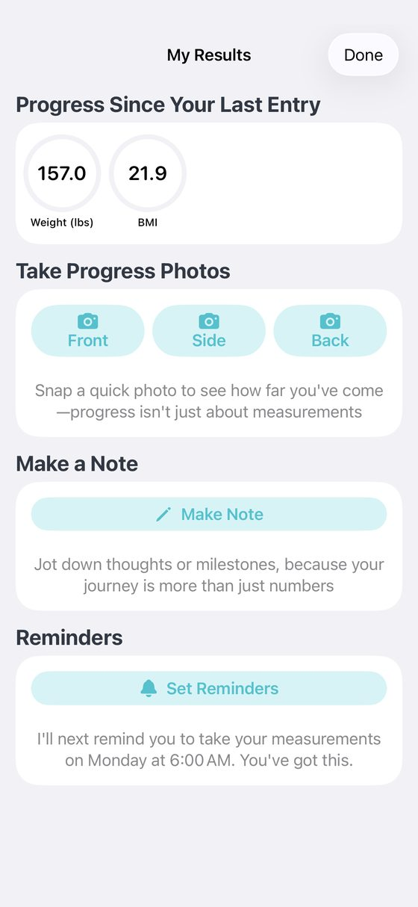
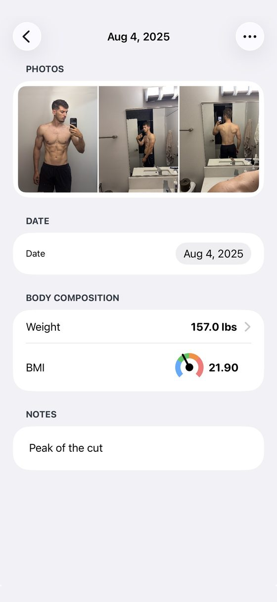
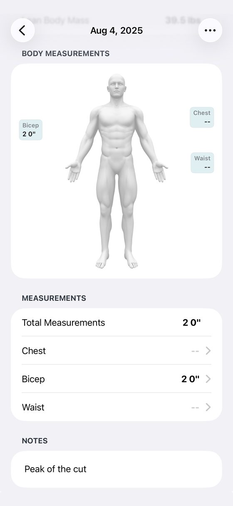
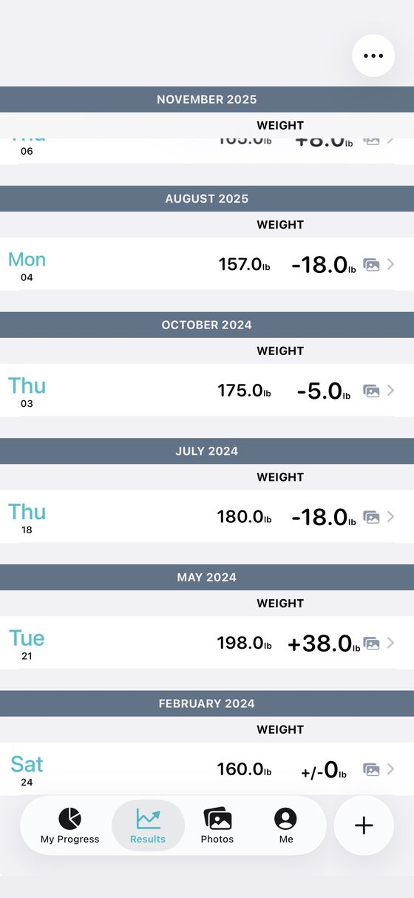

Blog · Best progress photo apps · [DRAFT: noindex, not published; publish date TBD] · Mark Stepchin
Lasmit "Progress" review: a measurement tracker first, a photo app second
By Mark Stepchin · Updated [CONFIRM: publish date]
Full disclosure: I build Recomp, a free progress photo app that competes with this one. No app pays me [CONFIRM: no ads, affiliate links or partner deals]. This review expands the Lasmit entry in my roundup of the best progress photo apps, scored with the same kit.
What it costs
Lasmit is free to download, but progress photos need Pro. Its listing says "Pro unlocks progress photos, unlimited measurement areas, custom reports, past-data entry, and more." The store lists $3.99 and $5.99 a month, $11.99 and $19.99 a year, and $29.99 lifetime. [TODO: which monthly price a new user sees]
A Sep 24, 2026 review says a "lifetime" purchase now needs an annual plan to log more than four measurements. I haven't checked that against the current paywall. [CONFIRM: lifetime vs annual measurement limit]
Taking a check-in
I proposed 3 out of 5 for capture. It has a nice weight scroller and a timer, but a single check-in is a multi-page form. That's the opposite of a check-in you'll repeat every week. [TODO: seconds and taps to a saved check-in]


Lining photos up
I proposed 0 for alignment, because there is none. Its Smart Overlay has been off by default since version 2026.5 on Feb 3, 2026. The release note says "when it didn't work, it was causing a lot of confusion." [CONFIRM: whether it aligns anything when switched on] [TODO: the rubric floor is 1; use 0 or 1?]
Comparing two dates
I proposed 2 for comparison. Side by side works in landscape only, with a date stepper on each side, so you step through dates one at a time. It's awkward, and not the best UI. The same 2026.5 update added a jump to any photo by date in compare. [TODO: seconds to put the oldest and newest front photos side by side]
Measurements and Apple Health
Measurements are where Lasmit earns its place. It tracks 17 body measurements plus up to 10 custom ones. Apple Health sync runs both ways: it reads weight, body fat and waist, and writes weight, body fat, lean body mass, waist and BMI. It also imports your past Apple Health data. Fitbit support was removed in 2026.22 on Sep 22, 2026.
Its reviewers care more about measurements than photos. In my study of 732 App Store reviews, 511 are Lasmit's. Of those, 220 mention measurements and 125 mention photos. Seven complain that it won't calculate body fat from tape or caliper numbers.


Importing old photos
I found no bulk photo import and no date-from-metadata in Lasmit's public docs. Photos taken in the app stay in the app, and you can save one to your phone by hand, per a 2019 help article. [TODO: hands-on import test]
Where your photos live
Photos and measurements sync to your own iCloud once you switch Progress on in iOS Settings. Its help article, updated Oct 14, 2025, says your data then survives deleting the app or getting a new phone. Version 2026.7 on Feb 27, 2026 fixed "an issue that was affecting moving your data between devices."
The label says Data Not Linked to You, and the policy names more. It lists Mixpanel, Firebase Remote Config, Crashlytics, RevenueCat, HealthKit and TestFlight. It also names Vero, which collects your email and first name, and Help Scout for support, and the label mentions neither. An app lock setting exists but didn't block anything for me. [CONFIRM: exact app-lock behavior]
Lost data shows up in its reviews. A Dec 2025 review is titled "Lost FIVE YEARS of data in latest upgrade." [TODO: iCloud delete-and-restore test]
What reviewers say
Reminders are what Lasmit's reviewers thank it for. Of the 37 reviews in my study that mention reminders, 19 positive ones are Lasmit's. One reads: "The reminders are helpful but not intrusive." Four of the five reminder complaints are Lasmit's too, including one that "would not stick to the requested reminder schedule."
Scores so far
| Score (1 to 5) | Lasmit | Status |
|---|---|---|
| Capture and tracking | 3 | Proposed |
| Alignment | 0 | Proposed; below the rubric floor of 1 |
| Comparison | 2 | Proposed |
| Design | TBD | |
| Performance | TBD | |
| Privacy | TBD | |
| Backup | TBD | |
| Import (bonus, outside the total) | TBD | |
| Total out of 35 | TBD | 5 from the three proposed |
[CONFIRM: rescore on the v8 rubric or the Oct 4 measured tiers; v7 provisional grade was B, 16/25. Beginner all-in-one label.]
The numbers
Every app's numbers sit side by side, with test dates, in my test data.
| Field | Value |
|---|---|
| Full name | Body Measurements Tracker App, "Progress" (Lasmit) |
| Rating | 4.63 from 9,355 US ratings (Oct 3, 2026) |
| Written reviews, Jul 2 to Oct 2, 2026 | 5 (US feed) |
| Written reviews in Apple's feed | 511 in my study (Oct 2, 2026) |
| First released | Dec 17, 2012 |
| Last updated | Sep 22, 2026 |
| Version tested | 2026.22 [CONFIRM] |
| Requires | iOS 18.0+ on iPhone, plus Vision Pro; no iPad, Mac or Android |
| App Store | Body Measurements Tracker App on the App Store |
[TODO: the roundup calls Lasmit's 5 recent written reviews "the most here," but GainFrame also had 5 in the same window.]
Who should use something else
If photos are your main record, Lasmit is the wrong shape. For a check-in you can repeat in a minute and a better compare screen, see my Thumbstone review or Then & Now review. For a one-time price with iCloud sync, see Fit-Stitch.
What I haven't tested yet
I still need design, performance, privacy, backup and import scores, and an iCloud restore. I also need to see what Smart Overlay does when it's on. If Lasmit's Smart Overlay works for you, email me at support@progressphotos.app.
See the progress buried in your camera roll
Compare progress photos on a before-and-after timeline, scroll to any date instantly, and align photos on the fly. Recomp never uploads your photos. It sends anonymous usage analytics and crash reports, with no account and no tracking.